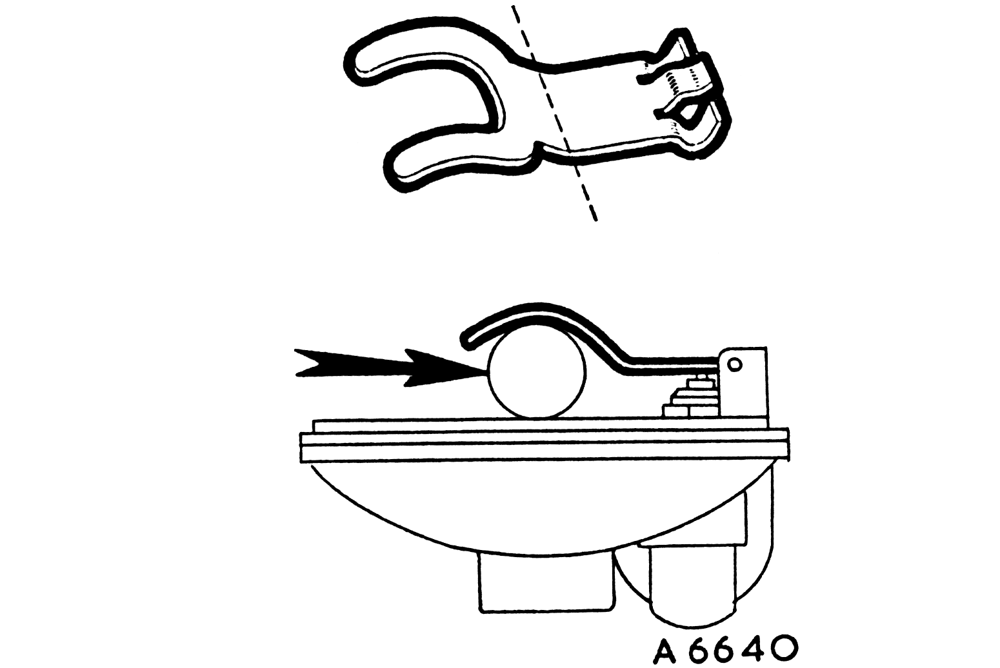
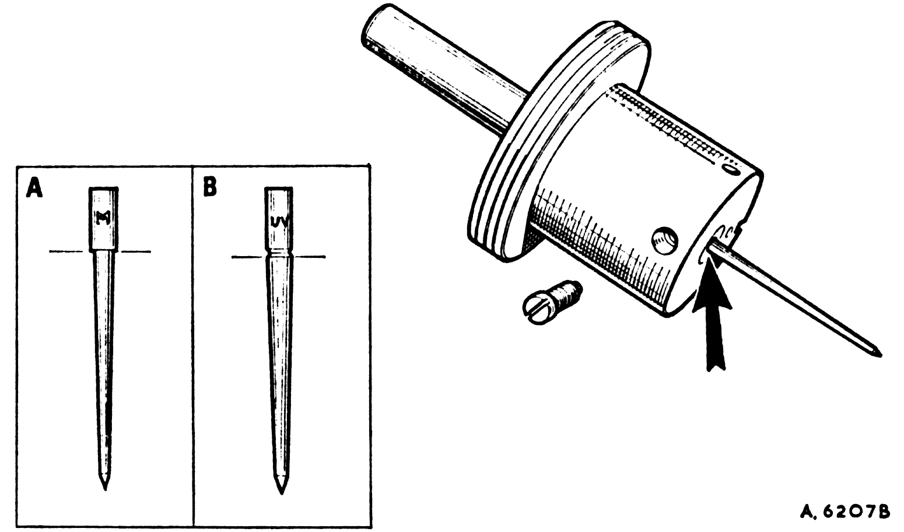

Adjusting and Servicing (continued)
Float-chamber fuel level

19
- Remove and invert the float-chamber lid.
- With the needle on its seating, insert a 7/16 in. (11 mm.) diameter bar between the forked lever and the lip of the float-chamber lid.
- The prongs of the lever should just rest on the bar. If they do not, carefully bend at the start of the pronged section until they do.
|
|
Needle size and position

20
The needle size is determined during engine development and will provide the correct mixture strength except under extremes of temperature, humidity, or altitude; e.g. a weaker needle will be necessary at altitudes exceeding 6,000 ft. (1800 m.). If modifications are made to the engine, (e.g. camshaft, compression ratio, air cleaner, or exhaust system) a different needle may be necessary to maintain performance.
- To check the needle fitted, remove the piston/suction chamber unit.
- Slacken the needle clamping screw, extract the needle, and check its identifying mark against the recommendation.
- Fit the correct needle and lock it in position so that the shoulder on the shank (A), or the lower edge of the groove (B), is flush with the piston base.
- Reassemble the piston/suction chamber unit.
|